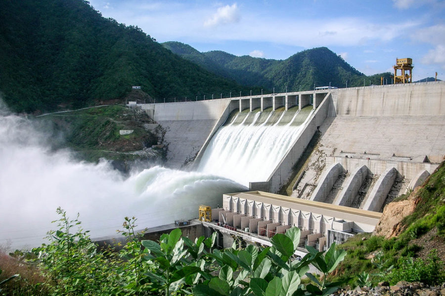

Humans have been harnessing the energy of river currents for centuries, using water wheels spun by rivers initially to process grains and cloth. Today, hydropower provides about 16 percent of the world's electricity, generating power in all but two U.S. states.
Hydropower became an electricity source in the late 19th century, a few decades after British-American engineer James Francis developed the first modern water turbine. In 1882, the world’s first hydroelectric power plant began operating in the United States along the Fox River in Appleton, Wisconsin.
 How hydropower works
How hydropower works
A typical hydroelectric plant is a system with three parts: a power plant where the electricity is produced, a dam that can be opened or closed to control water flow, and a reservoir where water is stored. The water behind the dam flows through an intake and pushes against blades in a turbine, causing them to turn. The turbine spins a generator to produce electricity.
The amount of electricity that can be generated depends on how far the water drops and how much water moves through the system. The electricity can be transported through long-distance electric lines to homes, factories, and businesses. Other types of hydropower plants make use of the flow through a waterway without a dam.

The largest hydropower plants
China, Brazil, Canada, the United States, and Russia are the five largest producers of hydropower. The world's largest hydroelectric plant in terms of installed capacity is Three Gorges (Sanxia) on China's Yangtze River, which is 1.4 miles (2.3 kilometers) wide and 607 feet (185 meters) high. The facility that actually generates the most electricity annually is the Itaipu plant situated on the Paraná River between Brazil and Paraguay.
The biggest hydropower plant in the United States is at the Grand Coulee Dam on the Columbia River in Washington, a state that gets about two-thirds of its electricity from hydropower.
Hydropower pros and cons
Hydropower has several advantages. Once a dam has been built and the equipment installed, the energy source—flowing water—is free. It's a clean fuel source renewed by snow and rainfall. Hydropower plants can supply large amounts of electricity, and they are relatively easy to adjust for demand by controlling the flow of water through the turbines.
But big dam projects can disrupt river ecosystems and surrounding communities, harming wildlife and forcing out residents. The Three Gorges Dam, for example, displaced an estimated 1.2 million people and flooded hundreds of villages.
Dams also prevent fish such as salmon from swimming upstream to spawn. While equipment such as fish ladders are designed to help salmon go up and over dams and enter upstream spawning areas, such measures aren't always effective. In some cases, fish are collected and trucked around the obstacles. Still, the presence of hydroelectric dams can often change migration patterns and hurt fish populations. In the Columbia River Basin in the Pacific Northwest, for example, salmon and steelhead have lost access to about 40 percent of their historic habitat because of dams.
Hydropower plants can also cause low dissolved oxygen levels in the water, which is harmful to river habitats. Other wildlife can be affected as well: In Indonesia, a hydroelectric project threatens rare Tapanuli orangutans because it stands to fragment their habitat.
Climate change and the increased risk of drought are also having an impact on the world's hydropower plants. In the western U.S., carbon dioxide emissions over a 15-year period were 100 megatons higher than they normally would have been, according to a 2018 study, as utilities turned to coal and gas to replace hydropower lost to drought.
Even the promise of carbon-free electricity from hydropower has been undermined by revelations that decaying organic material in reservoirs releases methane, a potent greenhouse gas that contributes to global warming.
However, some argue that the environmental impacts of hydroelectric power can be mitigated and remain low compared with burning fossil fuels. In some places, small hydro projects can take advantage of existing water flows or infrastructure. Special water intakes and turbines can help make sure water released from a dam is better aerated to address the problem of low dissolved oxygen. Dams can be planned more strategically to allow fish passages, for example, while water flows at existing dams can be calibrated to give ecosystems more recovery time from flooding cycles. And research continues on ways to make hydropower projects more friendly to the ecosystems around them.
A growing movement is also working to tear down dams that are no longer functioning or needed around the world, with the aim at restoring more natural rivers and the many benefits they provide to wildlife and people, including recreation.